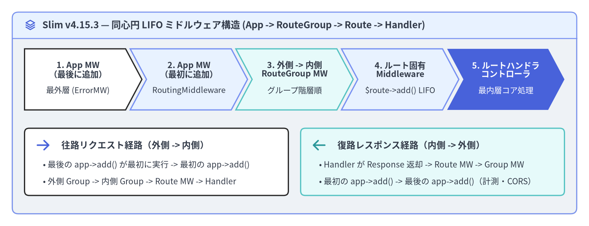
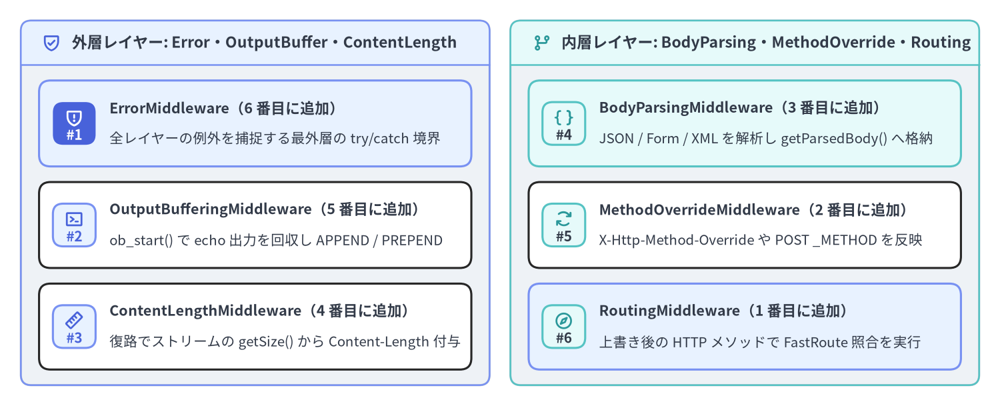

PSR-15 同心円 LIFO ミドルウェアパイプライン
Slim v4.15.3 のリクエスト処理パイプラインは、Slim\MiddlewareDispatcher によって構築される同心円（タマネギ型）の PSR-15 ミドルウェアスタックとして動作します。各ミドルウェアは中心の Slim\Routing\RouteRunner を外側から順番に包み込む Psr\Http\Server\RequestHandlerInterface レイヤーを形成します。**LIFO（Last-In, First-Out：後入れ先出し）**の登録原理と、アプリケーション・RouteGroup・Route の 3 つのスコープが実行時にどのように合成されるかを正確に理解することは、認証・ボディ解析・HTTP メソッド上書き・ルーティング・例外ハンドリングの順序バグを防ぐ上で不可欠です。

Source Code
from drawlib.canvas import save, setup
from drawlib.icons import phosphor
from drawlib.shapes import rectangle
from drawlib.smartarts import ChevronProcess, Panel
from drawlib.styles import Styles
from drawlib.text import text
setup(width=192, height=74, dpi=150)
outer = Panel(
"Slim v4.15.3 — 同心円 LIFO ミドルウェア構造 (App -> RouteGroup -> Route -> Handler)",
style=Styles.Neutral.patch(shape_r=2.0),
header_style=Styles.PrimaryNeutral.patch(shape_line_width=1.2),
text_style=Styles.DarkBold.patch(text_size=11.5),
icon=phosphor.stack,
icon_style=Styles.PrimaryBold,
header_variant="filled",
header_height=8.5,
)
outer.draw((4.0, 4.0), width=184.0, height=66.0)
proc = ChevronProcess(
style=Styles.White,
text_style=Styles.DarkBold.patch(text_size=10.2),
description_style=Styles.Dark.patch(text_size=9.8),
corner_angle=62.0,
spacing=1.5,
flat_left_end=True,
)
proc.add(
"1. App MW\n（最後に追加）",
description="最外層 (ErrorMW)",
style=Styles.White,
)
proc.add(
"2. App MW\n（最初に追加）",
description="RoutingMiddleware",
style=Styles.PrimaryNeutral,
)
proc.add(
"3. 外側 -> 内側\nRouteGroup MW",
description="グループ階層順",
style=Styles.SecondaryNeutral,
)
proc.add(
"4. ルート固有\nMiddleware",
description="$route->add() LIFO",
style=Styles.PrimaryNeutral,
)
proc.add(
"5. ルートハンドラ\nコントローラ",
description="最内層コア処理",
style=Styles.PrimaryFlat,
text_style=Styles.WhiteBold.patch(text_size=10.2),
description_style=Styles.White.patch(text_size=9.8),
)
proc.draw(xy=(8.0, 38.0), width=176.0, height=20.0)
rectangle((51.0, 21.0), width=86.0, height=22.0, style=Styles.White.patch(shape_r=1.5))
phosphor.arrow_right((14.0, 26.5), width=5.2, style=Styles.PrimaryBold)
text(
(20.0, 26.5),
"往路リクエスト経路（外側 -> 内側）",
style=Styles.DarkBold.patch(text_size=10.8, halign="left"),
)
text(
(14.0, 20.0),
"• 最後の app->add() が最初に実行 -> 最初の app->add()",
style=Styles.Dark.patch(text_size=10.0, halign="left"),
)
text(
(14.0, 14.5),
"• 外側 Group -> 内側 Group -> Route MW -> Handler",
style=Styles.Dark.patch(text_size=10.0, halign="left"),
)
rectangle((141.0, 21.0), width=86.0, height=22.0, style=Styles.SecondaryNeutral.patch(shape_r=1.5))
phosphor.arrow_left((104.0, 26.5), width=5.2, style=Styles.SecondaryBold)
text(
(110.0, 26.5),
"復路レスポンス経路（内側 -> 外側）",
style=Styles.DarkBold.patch(text_size=10.8, halign="left"),
)
text(
(104.0, 20.0),
"• Handler が Response 返却 -> Route MW -> Group MW",
style=Styles.Dark.patch(text_size=10.0, halign="left"),
)
text(
(104.0, 14.5),
"• 最初の app->add() -> 最後の app->add()（計測・CORS）",
style=Styles.Dark.patch(text_size=10.0, halign="left"),
)
save()
MiddlewareDispatcher による同心円 LIFO スタックの構築原理
Slim\App の初期化時、MiddlewareDispatcher は内部の $this->tip ポインタを中心核である Slim\Routing\RouteRunner に設定します。その後 $app->add($middleware) を呼び出すたびに、現在の $this->tip を内包する新しい無名 RequestHandlerInterface ノードが生成されて外側に被せられます。つまり、**$app->add() で最後に追加したミドルウェアが同心円の最外層（リクエスト往路で最初、レスポンス復路で最後）**になります。
| コード上の登録順序 | 同心円レイヤー内の位置 | 往路（Request）の実行順序 | 復路（Response）の実行順序 |
|---|---|---|---|
1. $app->add(MiddlewareA::class) |
アプリ最内層（RouteRunner の直前） |
3 番目（RouteRunner の直前） |
2 番目（RouteRunner の直後） |
2. $app->add(MiddlewareB::class) |
中間レイヤー（MiddlewareA を包む） |
2 番目 | 3 番目 |
3. $app->add(MiddlewareC::class) |
アプリ最外層（MiddlewareB を包む） |
1 番目（最初に $request を処理） |
4 番目（最後に $response を処理） |
中心核 RouteRunner + ルートハンドラ |
同心円の中心（Core） | 4 番目（ResponseInterface を生成） |
1 番目（ResponseInterface を返却） |
PSR-15 クラスミドルウェアと Closure ミドルウェアの実装
Slim の $app->add()、$group->add()、$route->add() には以下の 3 形式でミドルウェアを登録できます。
- PSR-15
MiddlewareInterfaceインスタンスまたはクラス名文字列（MyMiddleware::class）: 本番環境で最も推奨される方式です。クラス名文字列で登録すると、実際にそのミドルウェア層へ到達した時点で初めて PSR-11 コンテナから遅延解決（Lazy Resolution）されます。 - Invokable クラスまたは Closure（
fn(ServerRequestInterface $request, RequestHandlerInterface $handler): ResponseInterface）: 軽量な処理やテストコードに便利です。 - Callable 文字列（
'App\Middleware\CustomMiddleware:process'）:AdvancedCallableResolverInterfaceによって解決されます。
<?php
declare(strict_types=1);
namespace App\Middleware;
use Psr\Http\Message\ResponseInterface as Response;
use Psr\Http\Message\ServerRequestInterface as Request;
use Psr\Http\Server\MiddlewareInterface;
use Psr\Http\Server\RequestHandlerInterface as RequestHandler;
use Slim\Psr7\Factory\ResponseFactory;
final class RequestIdAndTimingMiddleware implements MiddlewareInterface
{
public function process(Request $request, RequestHandler $handler): Response
{
// 1. 往路の前処理（内側のレイヤーおよびコントローラ実行前）
$startTime = hrtime(true);
$requestId = $request->getHeaderLine('X-Request-Id') ?: bin2hex(random_bytes(8));
// 相関 ID をイミュータブルなリクエスト属性として後続レイヤーへ伝播
$request = $request->withAttribute('request_id', $requestId);
// 2. 同心円の次の内側レイヤーへ処理を委譲
$response = $handler->handle($request);
// 3. 復路の後処理（内側レイヤーから Response が返却された後）
$elapsedMs = (hrtime(true) - $startTime) / 1_000_000;
return $response
->withHeader('X-Request-Id', $requestId)
->withHeader('X-Response-Time-Ms', sprintf('%.2f', $elapsedMs));
}
}
// ショートサーキット（早期リターン）の例: $handler->handle() を呼ばずに即座に Response を返す
$maintenanceGuard = static function (Request $request, RequestHandler $handler): Response {
if (($_ENV['MAINTENANCE_MODE'] ?? 'false') === 'true') {
$response = (new ResponseFactory())->createResponse(503);
$response->getBody()->write('{"error":"Service temporarily under maintenance"}');
return $response
->withHeader('Content-Type', 'application/json')
->withHeader('Retry-After', '120');
}
return $handler->handle($request);
};
アプリ・RouteGroup・Route スコープを横断する実行順序
アプリケーション全体（$app->add()）、ネストされたルートグループ（$group->add()）、個別ルート（$route->add()）のミドルウェアがどのように組み合わさるかは、Slim 4 の 2 段階ディスパッチモデルを理解すると明確になります。
- 第 1 段階 — アプリケーション
MiddlewareDispatcher:$app->add()で登録されたミドルウェアを LIFO 順で通過し、RouteRunner::handle()へ到達します。 - 第 2 段階 —
RouteRunner内のRoute::prepare(): マッチしたRouteが実行される直前に、Route::appendGroupMiddlewareToRoute()が内側のRouteGroupから外側のRouteGroupへと順番にミドルウェアを取り出してルート自身のミドルウェアリストへ追加します。その後Route内部のMiddlewareDispatcherが LIFO でラップするため、最終的な実行順序は以下の通りになります。- 異なるスコープ間: アプリミドルウェア -> 外側
RouteGroup-> 内側RouteGroup-> 個別Routeミドルウェア -> ルートハンドラ の順（自然な外から内への階層順）で実行されます。 - 同一スコープ内: 同じルートに対する複数の
$route->add()（または同じグループに対する複数の$group->add()）の間では LIFO（後から追加したものが外側）が適用されます。
- 異なるスコープ間: アプリミドルウェア -> 外側
<?php
declare(strict_types=1);
use Psr\Http\Message\ResponseInterface as Response;
use Psr\Http\Message\ServerRequestInterface as Request;
use Psr\Http\Server\RequestHandlerInterface as RequestHandler;
use Slim\Factory\AppFactory;
use Slim\Routing\RouteCollectorProxy;
$app = AppFactory::create();
$trace = static fn(string $label) => static function (Request $req, RequestHandler $h) use ($label): Response {
$res = $h->handle($req->withAttribute('trace', [...$req->getAttribute('trace', []), "in:$label"]));
return $res->withAddedHeader('X-Trace-Out', $label);
};
// アプリスコープ（LIFO のため往路では App2 -> App1 の順で実行）
$app->add($trace('App1'));
$app->add($trace('App2'));
$app->group('/api', function (RouteCollectorProxy $api) use ($trace): void {
$api->group('/v1', function (RouteCollectorProxy $v1) use ($trace): void {
$v1->get('/ping', function (Request $request, Response $response): Response {
// 往路（inbound）の実際の通過順序:
// ["in:App2", "in:App1", "in:OuterGroup", "in:InnerGroup", "in:Route2", "in:Route1"]
$payload = json_encode(['inbound' => $request->getAttribute('trace')], JSON_THROW_ON_ERROR);
$response->getBody()->write($payload);
return $response->withHeader('Content-Type', 'application/json');
})
->add($trace('Route1'))
->add($trace('Route2'));
})->add($trace('InnerGroup'));
})->add($trace('OuterGroup'));
標準ユーティリティミドルウェアと推奨登録順序
Slim v4.15.3 の Slim\Middleware\ 名前空間には、基本 3 ミドルウェア（RoutingMiddleware、BodyParsingMiddleware、ErrorMiddleware）に加えて、実用的な 3 つのユーティリティミドルウェアが標準搭載されています。

Source Code
from drawlib.canvas import save, setup
from drawlib.icons import phosphor
from drawlib.smartarts import CardList, Panel
from drawlib.styles import Styles
setup(width=192, height=78, dpi=150)
left_panel = Panel(
"外層レイヤー: Error・OutputBuffer・ContentLength",
style=Styles.Neutral.patch(shape_r=2.0),
header_style=Styles.PrimaryNeutral.patch(shape_line_width=1.2),
text_style=Styles.DarkBold.patch(text_size=11.0),
icon=phosphor.shield_check,
icon_style=Styles.PrimaryBold,
header_variant="filled",
header_height=8.5,
)
left_panel.draw((4.0, 4.0), width=90.0, height=70.0)
l_xy, l_w, l_h = left_panel.get_content_box((4.0, 4.0), width=90.0, height=70.0, padding=(3.5, 3.0))
cl_left = CardList(
style=Styles.White,
text_style=Styles.DarkBold.patch(text_size=10.4),
description_style=Styles.Dark.patch(text_size=9.9),
badge_shape="rounded_rect",
badge_style=Styles.PrimaryNeutral,
badge_text_style=Styles.PrimaryBold.patch(text_size=10.0),
icon_style=Styles.PrimaryBold,
direction="vertical",
spacing=3.0,
)
cl_left.add(
"ErrorMiddleware（6 番目に追加）",
"全レイヤーの例外を捕捉する最外層の try/catch 境界",
badge_text="#1",
icon=phosphor.shield_warning,
style=Styles.PrimaryNeutral,
badge_style=Styles.PrimaryFlat,
badge_text_style=Styles.WhiteBold.patch(text_size=10.0),
icon_style=Styles.WhiteBold,
)
cl_left.add(
"OutputBufferingMiddleware（5 番目に追加）",
"ob_start() で echo 出力を回収し APPEND / PREPEND",
badge_text="#2",
icon=phosphor.terminal_window,
style=Styles.White,
)
cl_left.add(
"ContentLengthMiddleware（4 番目に追加）",
"復路でストリームの getSize() から Content-Length 付与",
badge_text="#3",
icon=phosphor.ruler,
style=Styles.White,
)
cl_left.draw(xy=l_xy, width=l_w, height=l_h)
right_panel = Panel(
"内層レイヤー: BodyParsing・MethodOverride・Routing",
style=Styles.Neutral.patch(shape_r=2.0),
header_style=Styles.SecondaryNeutral.patch(shape_line_width=1.2),
text_style=Styles.DarkBold.patch(text_size=11.0),
icon=phosphor.git_branch,
icon_style=Styles.SecondaryBold,
header_variant="filled",
header_height=8.5,
)
right_panel.draw((98.0, 4.0), width=90.0, height=70.0)
r_xy, r_w, r_h = right_panel.get_content_box((98.0, 4.0), width=90.0, height=70.0, padding=(3.5, 3.0))
cl_right = CardList(
style=Styles.White,
text_style=Styles.DarkBold.patch(text_size=10.4),
description_style=Styles.Dark.patch(text_size=9.9),
badge_shape="rounded_rect",
badge_style=Styles.SecondaryNeutral,
badge_text_style=Styles.DarkBold.patch(text_size=10.0),
icon_style=Styles.SecondaryBold,
direction="vertical",
spacing=3.0,
)
cl_right.add(
"BodyParsingMiddleware（3 番目に追加）",
"JSON / Form / XML を解析し getParsedBody() へ格納",
badge_text="#4",
icon=phosphor.brackets_curly,
style=Styles.SecondaryNeutral,
)
cl_right.add(
"MethodOverrideMiddleware（2 番目に追加）",
"X-Http-Method-Override や POST _METHOD を反映",
badge_text="#5",
icon=phosphor.arrows_clockwise,
style=Styles.White,
)
cl_right.add(
"RoutingMiddleware（1 番目に追加）",
"上書き後の HTTP メソッドで FastRoute 照合を実行",
badge_text="#6",
icon=phosphor.compass,
style=Styles.PrimaryNeutral,
)
cl_right.draw(xy=r_xy, width=r_w, height=r_h)
save()
標準ミドルウェア（Slim\Middleware\*） |
主なコンストラクタ引数・オプション | パイプライン内の推奨配置ルール |
|---|---|---|
RoutingMiddleware |
new RoutingMiddleware($routeResolver, $routeParser) |
1 番目に登録（最内層）: MethodOverrideMiddleware の後、RouteRunner の直前で実行 |
MethodOverrideMiddleware |
new MethodOverrideMiddleware() |
2 番目に登録: 往路で BodyParsingMiddleware の後、かつ RoutingMiddleware の前に実行 |
BodyParsingMiddleware |
$app->addBodyParsingMiddleware($bodyParsers) |
3 番目に登録: MethodOverrideMiddleware やコントローラより前に JSON / Form / XML を解析 |
ContentLengthMiddleware |
new ContentLengthMiddleware() |
4 番目に登録: ボディを変更する全ミドルウェア（OutputBufferingMiddleware 等）の内側でサイズを算出 |
OutputBufferingMiddleware |
new OutputBufferingMiddleware($streamFactory, OutputBufferingMiddleware::APPEND) |
5 番目に登録: ob_start() で偶発的な echo 出力を回収し APPEND（末尾）または PREPEND（先頭）へ結合 |
ErrorMiddleware |
$app->addErrorMiddleware($displayDetails, $logErrors, $logDetails) |
6 番目に登録（最外層）: 内側のあらゆるミドルウェア・ハンドラから送出された例外を捕捉 |
[!IMPORTANT]
MethodOverrideMiddlewareと前後ミドルウェアの依存関係:MethodOverrideMiddlewareはX-Http-Method-Overrideヘッダだけでなく、POSTリクエストの(array) $request->getParsedBody()に含まれる_METHODパラメータ（例：_METHOD=DELETE）も参照します。したがってリクエスト往路において、まずBodyParsingMiddlewareがボディを解析し、次にMethodOverrideMiddlewareが HTTP メソッドを書き換え、その後にRoutingMiddlewareが FastRoute 照合を行う必要があります。$app->add()は LIFO のため、コード上ではaddRoutingMiddleware()->add(new MethodOverrideMiddleware())->addBodyParsingMiddleware()の順で登録します。
<?php
declare(strict_types=1);
use Slim\Factory\AppFactory;
use Slim\Middleware\ContentLengthMiddleware;
use Slim\Middleware\MethodOverrideMiddleware;
use Slim\Middleware\OutputBufferingMiddleware;
$app = AppFactory::createFromContainer($container);
// 1. 最内層: FastRoute ルーティング解決（往路 6 番目に実行）
$app->addRoutingMiddleware();
// 2. X-Http-Method-Override ヘッダまたは POST _METHOD によるメソッド上書き（往路 5 番目に実行）
$app->add(new MethodOverrideMiddleware());
// 3. MethodOverride やハンドラより前に JSON / Form / XML ボディを解析（往路 4 番目に実行）
$app->addBodyParsingMiddleware();
// 4. 復路でレスポンスストリームの getSize() から Content-Length を自動算出（往路 3 番目に実行）
$app->add(new ContentLengthMiddleware());
// 5. ob_start() で PHP の echo/print 出力バッファを回収（往路 2 番目に実行）
$app->add(new OutputBufferingMiddleware(
$app->getResponseFactory()->createResponse()->getBody() instanceof \Psr\Http\Message\StreamInterface
? new \Slim\Psr7\Factory\StreamFactory()
: $container->get(\Psr\Http\Message\StreamFactoryInterface::class),
OutputBufferingMiddleware::APPEND
));
// 6. 最外層: グローバル例外ハンドリング境界（最後に登録 -> 往路 1 番目・復路最後に実行）
$app->addErrorMiddleware(displayErrorDetails: false, logErrors: true, logErrorDetails: true);
PSR-15 同心円 LIFO パイプラインの仕組みを理解したら、続いて 第 5 章：JWT 認証・RBAC 認可・CORS 設計 および ErrorMiddleware とカスタム ErrorRenderer へ進み、実践的なセキュリティミドルウェアと構造化エラーレスポンスの実装を確認しましょう。また、MiddlewareDispatcher の内部構造については Slim 4 内部アーキテクチャ解説 および Slim 4 API リファレンス も併せて参照してください。